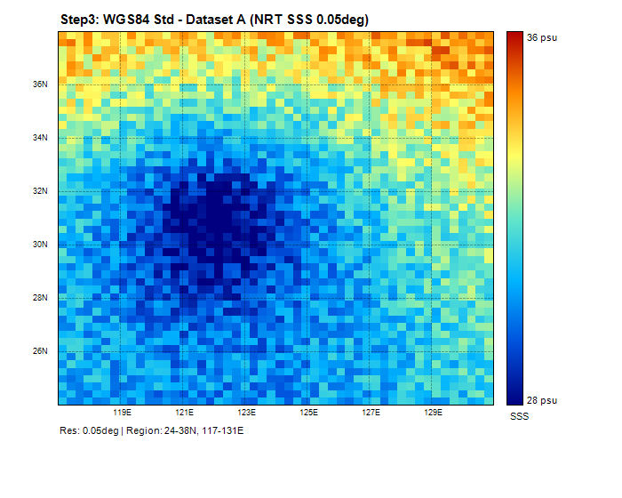
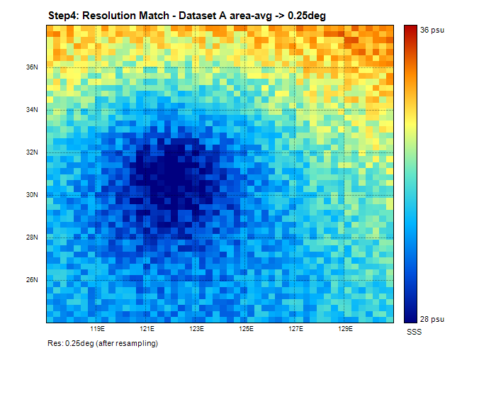
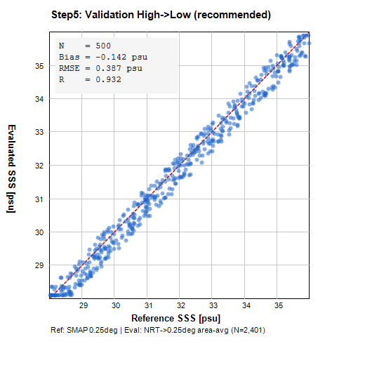
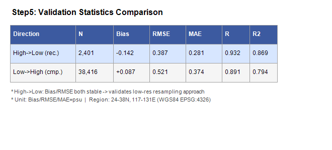

제각각인 위성 격자·투영·해상도를 WGS84 표준격자로 자동 정규화·검증하는 파이프라인을 AI 에이전트 협업으로 구축하고 웹 GUI까지.
NC 파일마다 격자·좌표계·QC가 제각각
→ 비교할 때마다 격자파악·재투영·리샘플·통계·플롯을 수작업으로 반복
반복 전처리를 표준 파이프라인 1회 실행으로 대체.
임의의 NC 쌍에 대해 동일한 절차를 보장.
PIPELINE.md → brainstorming → 설계 스펙 → 4관점 적대적 멀티에이전트 리뷰 2라운드 → v3 수렴
writing-plans로 TDD task 분해 → 서브에이전트 주도(구현+리뷰 분리, 20+ 에이전트)
Claude Design MCP로 UI 임포트 → SSE 실데이터 연결 → 적대검증 → 구현
변수명·좌표명·해상도·단위·시간 길이를 자동 탐지
lat/lon → y/x 리네임 · 경도 −180~180 정규화 · 4D squeeze → 2D · 분석영역 sel() 클립
두 자료 중 한 쪽을 다른 쪽 격자로 맞춤 · coarse(다운샘플) 또는 fine(업샘플)
N · Bias · RMSE · MAE · R(Pearson) · R²_NSE
영상 시각화 (turbo colormap, 25~40 PSU) · 산점도




| 방향 | N | Bias | RMSE | MAE | R | R² |
|---|---|---|---|---|---|---|
| 고→저 (권장) | 2,401 | −0.142 | 0.387 | 0.281 | 0.932 | 0.869 |
| 저→고 (비교) | 38,416 | +0.087 | 0.521 | 0.374 | 0.891 | 0.794 |
고→저 방향이 Bias·RMSE 모두 낮고 R이 높아 저해상도 기준 리샘플의 타당성 확인 · R=0.932 → 두 자료 간 공간 패턴 높은 일치도
업로드 → 실행 → 표준격자 정규화·검증·시각화까지
클릭 한 번 / 수십 초
SSE 실데이터 연결 · Leaflet 지도 시각화
| 지표 | Before (수작업) | After (에이전트화) |
|---|---|---|
| 검증 1건 소요시간 | 수 시간* | 클릭 1번 / CLI 1줄 (수십 초) |
| 손 가는 단계 수 | 7+ (격자·좌표계·QC·재투영·리샘플·통계·플롯) | 1 (업로드 → 실행) |
| 적용 범위 | 파일별 1회성 스크립트 | 임의 NC 쌍 동일 절차 |
| 산출물 | 산발적 (PNG 몇 장·메모) | 9 PNG + 2 CSV + report.md 자동 |
| 재현성 | 사람마다 절차 다름 | 매 실행 동일 (표준격자 고정) |
| 품질 보증 | 수동 (검증 어려움) | pytest 32 + vitest 11 자동 통과 |
* "수 시간"은 추정치 — 기존 실제 소요시간 확인 후 실측으로 교체 예정.
누구든 동일 절차로 위성자료를 비교 → 반복 전처리 노동 제거
매 실행 동일한 표준 절차로 결과의 신뢰성·재현성 확보
다른 위성·변수로 그대로 확장 적용 가능
박종집 — "우와! 신세계다!!"
이동관 — "스킬을 이용한 구현으로 에러율과 완성도가 올라가는 게 충격. 내가 못 쓰고 있었다."
김소희 — "AI 작업물 검토를 위한 도메인 지식의 중요성을 다시 한번 깨달음."
위성 NetCDF 표준화·검증 자동화